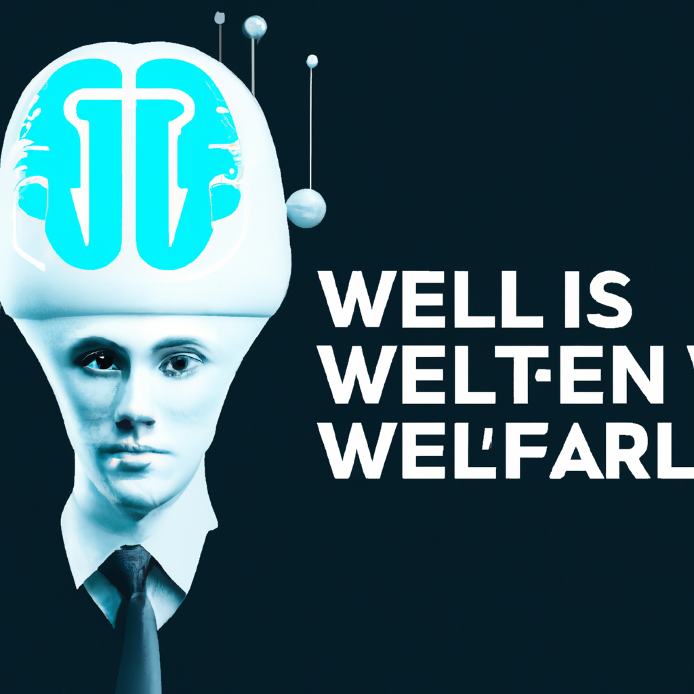

Why AI will never replace the intelligent web developers
Artificial Intelligence (AI) has been making a lot of headlines recently, as it has become more and more important in the world of technology. Many have suggested that AI will eventually replace web developers, and that technology would become increasingly automated. However, I believe that AI is not capable of replacing web developers, and that the two technologies can work together to make web development more efficient.
First of all, AI is not capable of completely replacing web developers. While AI can automate certain tasks, it cannot do the same level of work as a web developer. AI can do things like identify patterns in data, but it cannot think of creative solutions to problems, or come up with innovative ideas for web design. AI also cannot really comprehend the user experience, meaning it cannot understand how users interact with a website, or how to make the website more user friendly.
AI can also be unreliable. It is capable of making mistakes, and can sometimes produce results that are not accurate. This is especially true when it comes to web development, as coding requires precision and accuracy. AI is not capable of the same level of accuracy as a human being, and mistakes can be costly.
Finally, AI cannot replicate the human touch that web developers provide. AI cannot understand the nuances of web design, and cannot create the same level of design that a human can, as it lacks the emotional and creative capacity to do so.
In conclusion, AI is not capable of completely replacing web developers. While it can automate certain tasks, it is not able to do the same level of work as a human being. It can also be unreliable, and cannot replicate the human touch that web developers provide. AI can be a useful tool for web developers, but it should not be seen as a replacement.